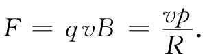
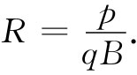

我们现在要来描述——主要采取定性方式——在各种不同情况下电荷的运动。电荷在场中运动的有趣现象，大多数都发生于有许许多多电荷互相作用着的十分复杂的情况下。例如，当电磁波行经一块材料或一团等离子体时，会有亿万个电荷与该波相互作用并彼此相互作用。往后我们将进入这样的问题，但现在只希望讨论在给定 场中单个电荷的运动这种简单得多的问题。这样就可以忽略所有其他电荷——当然除了存在于某处的、借以产生我们将采用的场的那些电荷和电流以外。
我们大概应当首先询问粒子在匀强电场中的运动情况。在低速时，这一种运动并非特别有趣，它不过是在电场方向做匀加速运动。然而，如果粒子获得了足够多的能量以致成为相对论性的粒子，那么运动就会变得更加复杂。但我们将把这一情况下的问题留给你们自己去解决。
其次，考虑在没有电场的匀强磁场中的运动。我们已解决了这个问题——其中一个解是粒子做圆周运动。磁力qv×B始终与运动方向成直角，因而dp/dt垂直于p并具有量值vp/R，其中R为圆的半径，即

于是该圆周的轨道半径为
 （29.1）
那只是一种可能性。如果粒子还有沿场方向的运动分量，则这个运动是恒定的，因为在场的方向不可能有磁力的分量。粒子在一匀强磁场中的普遍运动将是一个平行于B的匀速运动加上一个垂直于B的圆周运动——轨道乃是一条柱形螺旋线（图29-1）。这螺旋线的半径由式（29.1）给出，只要我们用垂直于场的动量分量p⊥ 来代替其中的p。
图29-1 粒子在一匀强磁场中的运动